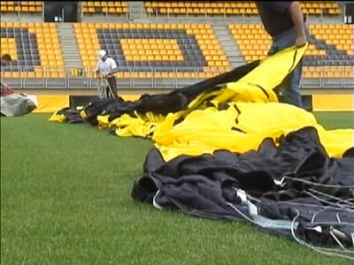
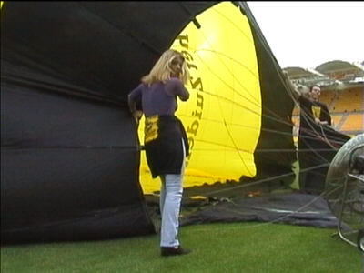
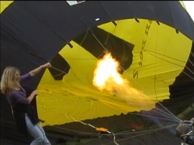
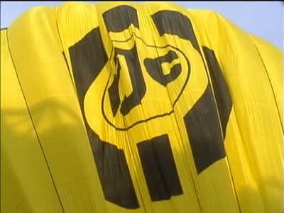
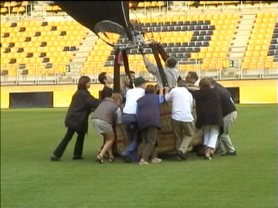
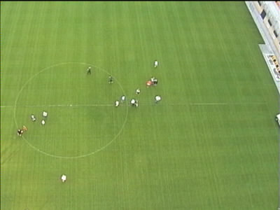
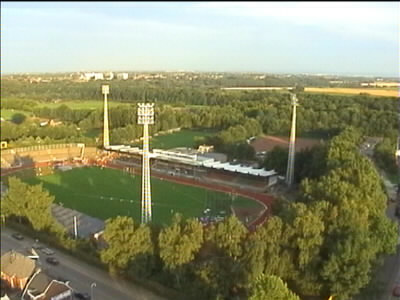

|
De Roda luchtballon 16 augustus 2001 |

De heteluchtballon ligt uitgevouwen op de excellente grasmat.

Met een ventilator wordt lucht ingeblazen.

Dan komt de vlam erbij en dat voel je flink!

De ballon richt zich ten hemel.

Er ontspint zich een precisiewerk om de ballon op het juiste
moment op de juiste plek omhoog te laten gaan.

De ballon stijgt 10 meter per seconde!

De wind blies richting Kaalheide waar op dat moment
atletiekwedstrijden werden gespeeld.
©KPD